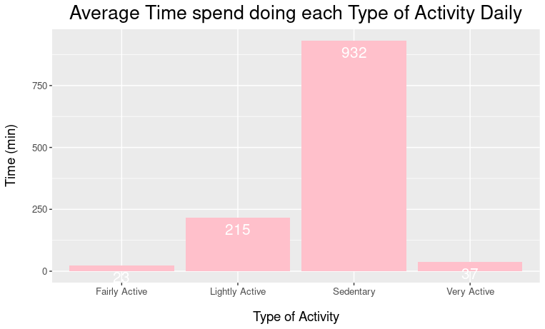
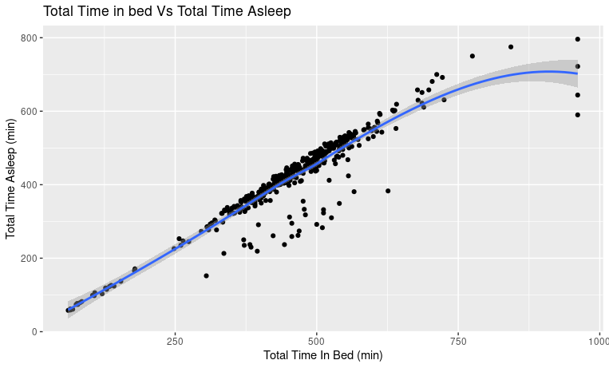
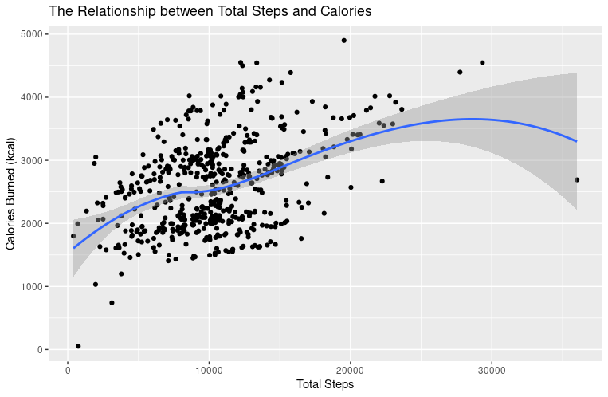
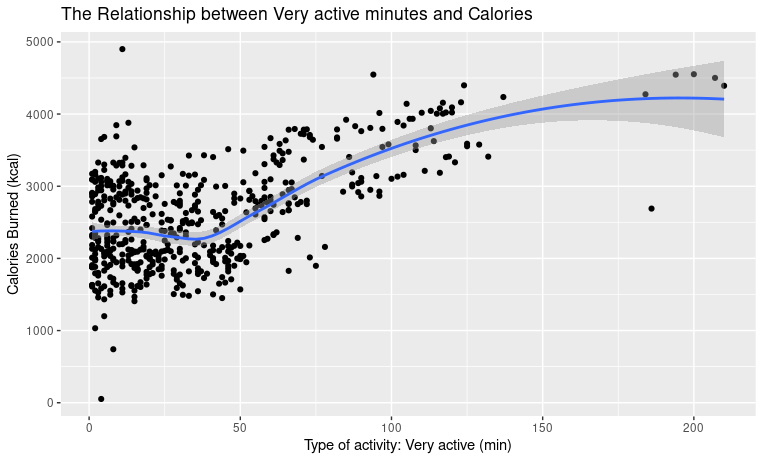
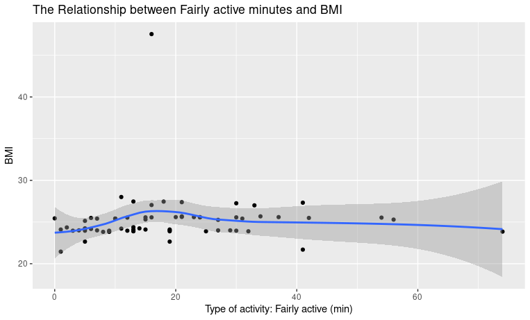
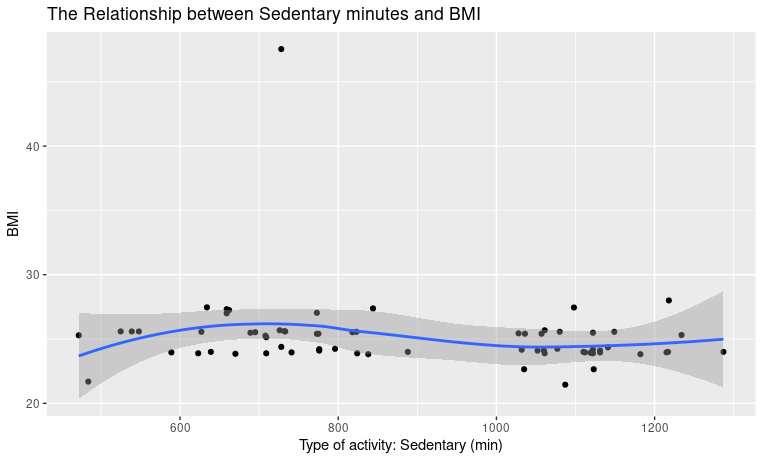

Report: How Can a Wellness Technology Company Play It Smart?
By: Amélie MEYER Date last edit : 11/04/2022
Introduction
This report will give a highly detailed summary of the processes used in this case study. For context, Bellabeat is a high-tech manufacturer of health-focused products for women. As a marketing analyst for Bellabeat, my role in this case study is to analyse a public dataset on the usage patterns of a non-Bellabeat smart device to gain insights into how consumers are currently using their smart devices. I will subsequently present a series of high-level recommendations based on the insights gleaned to Bellabeat's executive team for the company's marketing strategy.
Note: All my analysis will be completed in RStudio Cloud.
Contents
1. Ask
- Business Task
- Stakeholders
2. Prepare
3. Process
Checking the Data for Errors and Cleaning the Data
- Duplicated data
- Irrelevant data
- Inconsistencies in the number of rows
- Inconsistencies in the number of participants
- NULL/NA values
- Unrealistic data
4. Analyse
- Daily_activity table
- Daily_Sleep table
- Weight_log table
- Correlations
- Comparing Total Steps vs Total Calories
- Comparing Type of active Minutes vs Calories
- Calculating Time to fall asleep
- Comparing Time to fall asleep VS Calories
- Comparing Time to fall asleep VS Type of active Minutes
- Comparing Weight and BMI Vs Calories
- Comparing BMI VS Type of active Minutes
5. Share
- Daily_activity table
- Daily_Sleep table
- Correlations
- Comparing Total Steps vs Total Calories
- Comparing Type of active Minutes vs Calories
- Comparing BMI VS Type of active Minutes
6. Act
- Trends identified amongst health device users
- New growth opportunities and recommendations for Bellabeat's Marketing Strategy
- Recommendations based on the limitations of the dataset
Phase 1: Ask
The first step of the data analysis process is to identify the business task, data sources and stakeholders involved in this case study.
The goal of this case study is to discover new growth opportunities in Bellabeat’s sales through studying the available consumer data on non-Bellabeat smart devices to improve the marketing strategy for one of Bellabeat's products.
My analysis should reveal trends and allow me to formulate recommendations to guide Bellabeat’s next marketing campaign.
- The primary stakeholders are Urška Sršen (co-founder, chief creative officer) and Sando Mur (co-founder, key member of executive team and mathematician)
- The secondary stakeholders is the Bellabeat marketing analytics team
Phase 2: Prepare
Before cleaning and analysing the dataset, the data has to be inspected by checking the data for bias, determining the data's credibility and identifying limitations or constraints in the data.
In this analysis, the public dataset "FitBit Fitness Tracker Data" (FitBit Fitness Tracker Data | Kaggle) will be used. The dataset contains a personal fitness tracker from thirty FitBit users. Thirty eligible FitBit users consented to the submission of personal tracker data, including minute-level output for physical activity, heart rate, and sleep monitoring. It includes information about daily activity, steps, and heart rate that can be used to explore users’ behaviours and habits..
Keeping in mind the business task, the datasets containings the users' daily activity, sleep, and their weight is the data needed in order to learn more about the users’ daily habits.
The ROCCC system can be used in order to determine the credibility and extent to which the 'FitBit Fitness Tracker Data' is biassed.
- Reliable: This data is not reliable. The dataset contains secondary data collected via a distributed survey by Amazon Mechanical Turk. Little information was given about the collection process and the surveyees and so it is hard to determine whether this public data is from a credible source.
Furthermore there is no information about the margin of error and a small sample size (30 participants) has been used, which can limit the amount of analysis that can be done. - Original: The data used is not original as it was originally collected from Amazon Mechanical Murk.
- Comprehensive: This data is not comprehensive. Information about the respondents, such as their race/ socio-economic background/ age/ gender was not provided.
- Current: This data is not current. The data was collected in 2016, which means it is currently outdated and may not represent the current trends in smart device usage.
- Cited: As stated before, Amazon Mechanical Murk created the dataset, but we have no information on whether this is a credible source
The data integrity and credibility is clearly insufficient to provide reliable and comprehensive insights to Bellabeat. Therefore, the following analysis can only provide first hints and directions which should be verified through an analysis of a larger and much more reliable dataset.
Phase 3: Process
Before analysing the data and giving insights to the company, the data’s integrity has to be checked and the data has to be cleaned.
Checking the Data for Errors and Cleaning the Data
The first step is to load the packages needed for this analysis. Then, read the cvs files, and use the head() fonction to get a preview of the tables
> #Phase 3: Process
>
> ##loading packages
>
> install.packages("tidyverse")
Error in install.packages : Updating loaded packages
> library("tidyverse")
> install.packages("lubridate")
Error in install.packages : Updating loaded packages
> library("lubridate")
> install.packages("lubridate")
Installing package into ‘/cloud/lib/x86_64-pc-linux-gnu-library/4.1’
(as ‘lib’ is unspecified)
trying URL 'http://rspm/default/__linux__/focal/latest/src/contrib/lubridate_1.8.0.tar.gz'
Content type 'application/x-gzip' length 1812603 bytes (1.7 MB)
==================================================
downloaded 1.7 MB
* installing *binary* package ‘lubridate’ ...
* DONE (lubridate)
The downloaded source packages are in
‘/tmp/RtmpQMR00M/downloaded_packages’
> install.packages("tidyverse")
Installing package into ‘/cloud/lib/x86_64-pc-linux-gnu-library/4.1’
(as ‘lib’ is unspecified)
trying URL 'http://rspm/default/__linux__/focal/latest/src/contrib/tidyverse_1.3.1.tar.gz'
Content type 'application/x-gzip' length 424699 bytes (414 KB)
==================================================
downloaded 414 KB
* installing *binary* package ‘tidyverse’ ...
* DONE (tidyverse)
The downloaded source packages are in
‘/tmp/RtmpQMR00M/downloaded_packages’
> ##loading csv files
>
> daily_activity <- read_csv('Daily_Activity.csv')
Rows: 940 Columns: 15
── Column specification ────────────────────────────────────────────────────────────────────────────────────────
Delimiter: ","
chr (1): ActivityDate
dbl (14): Id, TotalSteps, TotalDistance, TrackerDistance, LoggedActivitiesDistance, VeryActiveDistance, Mode...
ℹ Use `spec()` to retrieve the full column specification for this data.
ℹ Specify the column types or set `show_col_types = FALSE` to quiet this message.
> daily_sleep <- read_csv('Daily_Sleep.csv')
Rows: 413 Columns: 5
── Column specification ────────────────────────────────────────────────────────────────────────────────────────
Delimiter: ","
chr (1): SleepDay
dbl (4): Id, TotalSleepRecords, TotalMinutesAsleep, TotalTimeInBed
ℹ Use `spec()` to retrieve the full column specification for this data.
ℹ Specify the column types or set `show_col_types = FALSE` to quiet this message.
> weight_log <- read_csv('Weight_Log.csv')
Rows: 67 Columns: 8
── Column specification ────────────────────────────────────────────────────────────────────────────────────────
Delimiter: ","
chr (1): Date
dbl (6): Id, WeightKg, WeightPounds, Fat, BMI, LogId
lgl (1): IsManualReport
ℹ Use `spec()` to retrieve the full column specification for this data.
ℹ Specify the column types or set `show_col_types = FALSE` to quiet this message.
Checking that each data is only present once, and deleting the ones that wouldn’t be.
> ##duplicated data
>
> nrow(daily_activity[duplicated(daily_activity),])
[1] 0
> ####deleting the 3 duplicates found on the daily_sleep table
> daily_sleep <- unique(daily_sleep)
> nrow(daily_sleep[duplicated(daily_sleep),])
[1] 0
> nrow(weight_log[duplicated(weight_log),])
[1] 0
The duplicates present in the tables were deleted. Hence, there are no duplicates anymore.
Checking that all dates are only from 03.12.2016 to 05.12.2016., which correspond to the date the survey was distributed.
> ##irrelavant data
>
> ####separating date and time from the daily_sleep and weight_log tables
> daily_sleep <- daily_sleep %>%
+ separate(SleepDay, c("Date", "Time"), " ")
Warning message:
Expected 2 pieces. Additional pieces discarded in 410 rows [1, 2, 3, 4, 5, 6, 7, 8, 9, 10, 11, 12, 13, 14, 15, 16, 17, 18, 19, 20, ...].
> weight_log <- weight_log %>%
+ separate(Date, c("Date", "Time"), " ")
Warning message:
Expected 2 pieces. Additional pieces discarded in 67 rows [1, 2, 3, 4, 5, 6, 7, 8, 9, 10, 11, 12, 13, 14, 15, 16, 17, 18, 19, 20, ...].
> ####changing date format, ordering the tables by dates and checking first and last row of the tables
> daily_activity <- rename(daily_activity, Date = ActivityDate)
> daily_activity$Date <- mdy(daily_activity$Date)
> daily_activity <- daily_activity[order(daily_activity$Date),]
> head(daily_activity, n=1)
# A tibble: 1 × 15
Id Date TotalSteps TotalDistance TrackerDistance LoggedActivitie… VeryActiveDista… ModeratelyActiv…
<dbl> <date> <dbl> <dbl> <dbl> <dbl> <dbl> <dbl>
1 1.50e9 2016-04-12 13162 8.5 8.5 0 1.88 0.550
# … with 7 more variables: LightActiveDistance <dbl>, SedentaryActiveDistance <dbl>, VeryActiveMinutes <dbl>,
# FairlyActiveMinutes <dbl>, LightlyActiveMinutes <dbl>, SedentaryMinutes <dbl>, Calories <dbl>
> tail(daily_activity, n=1)
# A tibble: 1 × 15
Id Date TotalSteps TotalDistance TrackerDistance LoggedActivitie… VeryActiveDista… ModeratelyActiv…
<dbl> <date> <dbl> <dbl> <dbl> <dbl> <dbl> <dbl>
1 8.88e9 2016-05-12 8064 6.12 6.12 0 1.82 0.0400
# … with 7 more variables: LightActiveDistance <dbl>, SedentaryActiveDistance <dbl>, VeryActiveMinutes <dbl>,
# FairlyActiveMinutes <dbl>, LightlyActiveMinutes <dbl>, SedentaryMinutes <dbl>, Calories <dbl>
> > daily_sleep$Date <- mdy(daily_sleep$Date)
> daily_sleep <- daily_sleep[order(daily_sleep$Date),]
> head(daily_sleep, n=1)
# A tibble: 1 × 6
Id Date Time TotalSleepRecords TotalMinutesAsleep TotalTimeInBed
<dbl> <date> <chr> <dbl> <dbl> <dbl>
1 1503960366 2016-04-12 12:00:00 1 327 346
> tail(daily_sleep, n=1)
# A tibble: 1 × 6
Id Date Time TotalSleepRecords TotalMinutesAsleep TotalTimeInBed
<dbl> <date> <chr> <dbl> <dbl> <dbl>
1 8378563200 2016-05-12 12:00:00 1 496 546
>
> weight_log$Date <- mdy(weight_log$Date)
> weight_log <- weight_log[order(weight_log$Date),]
> head(weight_log, n=1)
# A tibble: 1 × 9
Id Date Time WeightKg WeightPounds Fat BMI IsManualReport LogId
<dbl> <date> <chr> <dbl> <dbl> <dbl> <dbl> <lgl> <dbl>
1 6962181067 2016-04-12 11:59:59 62.5 138. NA 24.4 TRUE 1460505599000
> tail(weight_log, n=1)
# A tibble: 1 × 9
Id Date Time WeightKg WeightPounds Fat BMI IsManualReport LogId
<dbl> <date> <chr> <dbl> <dbl> <dbl> <dbl> <lgl> <dbl>
1 8877689391 2016-05-12 6:42:53 84 185. NA 25.1 FALSE 1463035373000
The start dates and end dates for all the tables are 2016-04-12 and 2016-05-12, so the data is relevant to this analysis
- Inconsistencies in the number of rows
The tables supposedly contain one entry per day per participant , 930 rows should be expected (the calculation would be 1*31*30).
> ##Inconsistencies in the number of rows
> nrow(daily_activity)
[1] 940
> nrow(daily_sleep_DT)
[1] 410
> nrow(weight_log_DT)
[1] 67
It would seem as if there are inconsistencies in the number of rows.
As we can see above, the number of rows in the daily_sleep (410) is fewer than the number of rows expected (930). There is missing data on the participants' sleep during the period of the survey.
The number of rows in the weight_log table (67) is much fewer than the number of rows expected (930), suggesting that most respondents did not enter their weight logs daily.
Since some data on the surveyees' sleep and weight log is missing, the conclusion obtained based on these 2 tables may not be fully accurate.
And there is more data than expected in the daily_activity table, investigating the number of participants might give us some kind of explanation.
- Inconsistencies in the number of participants
According to the metadata of this dataset, we shall expect 30 different IDs as there are 30 participants.
> ##Inconsistencies in the number of participants > > n_distinct(daily_activity$Id) [1] 33 > n_distinct(daily_sleep$Id) [1] 24 > n_distinct(weight_log$Id) [1] 8
Considering the variation in the numbers of unique Ids ('8', '24' and '33'), the dataset's integrity might have been compromised before being uploaded. This discrepancy will reduce the credibility of the analysis done based on this data. |
Checking for NULL or NA values in the tables.
> ##NULL/NA values
>
> ###NULL
> is.null(daily_activity)
[1] FALSE
> is.null(daily_sleep)
[1] FALSE
> is.null(weight_log)
[1] FALSE
>
> ###NA
> sum(is.na(daily_activity))
[1] 0
> sum(is.na(daily_sleep))
[1] 0
> sum(is.na(weight_log))
[1] 65
> #displaying the NA values in the weight_log table
> is.na(weight_log)
Id Date WeightKg WeightPounds Fat BMI IsManualReport LogId
[1,] FALSE FALSE FALSE FALSE FALSE FALSE FALSE FALSE
[2,] FALSE FALSE FALSE FALSE TRUE FALSE FALSE FALSE
[3,] FALSE FALSE FALSE FALSE TRUE FALSE FALSE FALSE
[4,] FALSE FALSE FALSE FALSE TRUE FALSE FALSE FALSE
[5,] FALSE FALSE FALSE FALSE TRUE FALSE FALSE FALSE
[6,] FALSE FALSE FALSE FALSE FALSE FALSE FALSE FALSE
[7,] FALSE FALSE FALSE FALSE TRUE FALSE FALSE FALSE
[8,] FALSE FALSE FALSE FALSE TRUE FALSE FALSE FALSE
[9,] FALSE FALSE FALSE FALSE TRUE FALSE FALSE FALSE
[10,] FALSE FALSE FALSE FALSE TRUE FALSE FALSE FALSE
[11,] FALSE FALSE FALSE FALSE TRUE FALSE FALSE FALSE
[12,] FALSE FALSE FALSE FALSE TRUE FALSE FALSE FALSE
[13,] FALSE FALSE FALSE FALSE TRUE FALSE FALSE FALSE
[14,] FALSE FALSE FALSE FALSE TRUE FALSE FALSE FALSE
[15,] FALSE FALSE FALSE FALSE TRUE FALSE FALSE FALSE
[16,] FALSE FALSE FALSE FALSE TRUE FALSE FALSE FALSE
[17,] FALSE FALSE FALSE FALSE TRUE FALSE FALSE FALSE
[18,] FALSE FALSE FALSE FALSE TRUE FALSE FALSE FALSE
[19,] FALSE FALSE FALSE FALSE TRUE FALSE FALSE FALSE
[20,] FALSE FALSE FALSE FALSE TRUE FALSE FALSE FALSE
[21,] FALSE FALSE FALSE FALSE TRUE FALSE FALSE FALSE
[22,] FALSE FALSE FALSE FALSE TRUE FALSE FALSE FALSE
[23,] FALSE FALSE FALSE FALSE TRUE FALSE FALSE FALSE
[24,] FALSE FALSE FALSE FALSE TRUE FALSE FALSE FALSE
[25,] FALSE FALSE FALSE FALSE TRUE FALSE FALSE FALSE
[26,] FALSE FALSE FALSE FALSE TRUE FALSE FALSE FALSE
[27,] FALSE FALSE FALSE FALSE TRUE FALSE FALSE FALSE
[28,] FALSE FALSE FALSE FALSE TRUE FALSE FALSE FALSE
[29,] FALSE FALSE FALSE FALSE TRUE FALSE FALSE FALSE
[30,] FALSE FALSE FALSE FALSE TRUE FALSE FALSE FALSE
[31,] FALSE FALSE FALSE FALSE TRUE FALSE FALSE FALSE
[32,] FALSE FALSE FALSE FALSE TRUE FALSE FALSE FALSE
[33,] FALSE FALSE FALSE FALSE TRUE FALSE FALSE FALSE
[34,] FALSE FALSE FALSE FALSE TRUE FALSE FALSE FALSE
[35,] FALSE FALSE FALSE FALSE TRUE FALSE FALSE FALSE
[36,] FALSE FALSE FALSE FALSE TRUE FALSE FALSE FALSE
[37,] FALSE FALSE FALSE FALSE TRUE FALSE FALSE FALSE
[38,] FALSE FALSE FALSE FALSE TRUE FALSE FALSE FALSE
[39,] FALSE FALSE FALSE FALSE TRUE FALSE FALSE FALSE
[40,] FALSE FALSE FALSE FALSE TRUE FALSE FALSE FALSE
[41,] FALSE FALSE FALSE FALSE TRUE FALSE FALSE FALSE
[42,] FALSE FALSE FALSE FALSE TRUE FALSE FALSE FALSE
[43,] FALSE FALSE FALSE FALSE TRUE FALSE FALSE FALSE
[44,] FALSE FALSE FALSE FALSE TRUE FALSE FALSE FALSE
[45,] FALSE FALSE FALSE FALSE TRUE FALSE FALSE FALSE
[46,] FALSE FALSE FALSE FALSE TRUE FALSE FALSE FALSE
[47,] FALSE FALSE FALSE FALSE TRUE FALSE FALSE FALSE
[48,] FALSE FALSE FALSE FALSE TRUE FALSE FALSE FALSE
[49,] FALSE FALSE FALSE FALSE TRUE FALSE FALSE FALSE
[50,] FALSE FALSE FALSE FALSE TRUE FALSE FALSE FALSE
[51,] FALSE FALSE FALSE FALSE TRUE FALSE FALSE FALSE
[52,] FALSE FALSE FALSE FALSE TRUE FALSE FALSE FALSE
[53,] FALSE FALSE FALSE FALSE TRUE FALSE FALSE FALSE
[54,] FALSE FALSE FALSE FALSE TRUE FALSE FALSE FALSE
[55,] FALSE FALSE FALSE FALSE TRUE FALSE FALSE FALSE
[56,] FALSE FALSE FALSE FALSE TRUE FALSE FALSE FALSE
[57,] FALSE FALSE FALSE FALSE TRUE FALSE FALSE FALSE
[58,] FALSE FALSE FALSE FALSE TRUE FALSE FALSE FALSE
[59,] FALSE FALSE FALSE FALSE TRUE FALSE FALSE FALSE
[60,] FALSE FALSE FALSE FALSE TRUE FALSE FALSE FALSE
[61,] FALSE FALSE FALSE FALSE TRUE FALSE FALSE FALSE
[62,] FALSE FALSE FALSE FALSE TRUE FALSE FALSE FALSE
[63,] FALSE FALSE FALSE FALSE TRUE FALSE FALSE FALSE
[64,] FALSE FALSE FALSE FALSE TRUE FALSE FALSE FALSE
[65,] FALSE FALSE FALSE FALSE TRUE FALSE FALSE FALSE
[66,] FALSE FALSE FALSE FALSE TRUE FALSE FALSE FALSE
[67,] FALSE FALSE FALSE FALSE TRUE FALSE FALSE FALSE
There are no NULL values in any of the tables. But there are 65 NA values in the weight_log table, the column Fat is missing most of its entries (65 out 67). Therefore, this column shall not be used during the analysis.
> ### removing the 'Fat' column
> weight_log <- subset(weight_log, select = -Fat)
But during the exploration of the tables, a lot of 0 were noticed. Therefore, those 0 will be filtered for the purpose of this analysis. Only on the TotalStep and TotalDistance columns of the daily_activity tables as it seems irrational to assume one did not move once during the day.
> ##Unrealistic data
>
> daily_activity <- daily_activity %>%
+ filter(TotalSteps !=0)
> daily_activity <- daily_activity %>%
+ filter(TotalDistance !=0)
Phase 4: Analyse In this phase the goal is to gain insight of the cleaned data. Here we have the statistical summary of the variables in each dataframe: >#Phase 5: Analyse >##summary variables > > ###daily_activity table > daily_activity %>% + select(TotalSteps, + TotalDistance, + VeryActiveMinutes, + FairlyActiveMinutes, + LightlyActiveMinutes, + SedentaryMinutes, + Calories) %>% + summary() TotalSteps TotalDistance VeryActiveMinutes FairlyActiveMinutes LightlyActiveMinutes SedentaryMinutes Min. : 400 Min. : 0.260 Min. : 1.00 Min. : 0.00 Min. : 9.0 Min. : 13.0 1st Qu.: 7887 1st Qu.: 5.525 1st Qu.: 10.00 1st Qu.: 8.00 1st Qu.:158.2 1st Qu.: 714.0 Median :10222 Median : 7.190 Median : 27.00 Median : 16.00 Median :214.0 Median : 962.5 Mean :10517 Mean : 7.636 Mean : 37.48 Mean : 23.14 Mean :215.4 Mean : 931.9 3rd Qu.:12791 3rd Qu.: 9.107 3rd Qu.: 55.00 3rd Qu.: 31.00 3rd Qu.:270.0 3rd Qu.:1142.8 Max. :36019 Max. :28.030 Max. :210.00 Max. :143.00 Max. :518.0 Max. :1413.0 Calories Min. : 52 1st Qu.:2022 Median :2552 Mean :2594 3rd Qu.:3054 Max. :4900
Observations: - Average sedentary minutes = 931.9 minutes /16 hours.
- Average very active minutes = 37.48 minutes.
- Average fairly active minutes = 23.14 minutes.
- Average lightly active minutes = 215.4 minutes/ 3.5 hours.
- Average distance walked per day = 10517 steps/7.6km
- Average amount of calories burnt per day = 2594kcal.
Deductions: - Participants were largely inactive throughout the day.
- Participants spent little time exercising.
- Participants are unlikely to take part in physical activities.
> ###daily_sleep table > daily_sleep %>% + select (TotalSleepRecords, + TotalMinutesAsleep, + TotalTimeInBed) %>% + summary() TotalSleepRecords TotalMinutesAsleep TotalTimeInBed Min. :1.00 Min. : 58.0 Min. : 61.0 1st Qu.:1.00 1st Qu.:361.0 1st Qu.:403.8 Median :1.00 Median :432.5 Median :463.0 Mean :1.12 Mean :419.2 Mean :458.5 3rd Qu.:1.00 3rd Qu.:490.0 3rd Qu.:526.0 Max. :3.00 Max. :796.0 Max. :961.0
Observations: - Average time in bed = 458.5 min/7.64 hours
- Average sleeping time = 419.2min/7 hours.
- Participants slept once per day on average.
Deductions: - Participants had an adequate amount of sleep.
- Participants spend around 40 minutes in bed without being asleep, this would suggest that they may have trouble falling asleep at night.
>###weight_log table > weight_log %>% + select (WeightKg, + BMI) %>% + summary() WeightKg BMI Min. : 52.60 Min. :21.45 1st Qu.: 61.40 1st Qu.:23.96 Median : 62.50 Median :24.39 Mean : 72.04 Mean :25.19 3rd Qu.: 85.05 3rd Qu.:25.56 Max. :133.50 Max. :47.54
> ####Overweight participants > overweight <- weight_log%>% + filter(BMI > 24.9) > distinct(overweight, Id) # A tibble: 5 × 1 Id <dbl> 1 1927972279 2 4319703577 3 4558609924 4 5577150313 5 8877689391
Observations: - Average weight = 72.04kg
- Average BMI = 25.19
- Overweight participants: 5 out of 8
Deductions: - The participants are on average slightly overweight as the average BMI is higher than 25 but lower than 30, which is considered overweight according to the World Health Organisation. As cited here:
“For adults, WHO defines overweight and obesity as follows: - overweight is a BMI greater than or equal to 25; and
- obesity is a BMI greater than or equal to 30.”
Source Comparing variables together using the Spearman's rank correlation coefficient, the closer the rho is to 1 or -1 the stronger the correlation will be, but only when the p-value is smaller than the critical value of 0.05, so the correlation is statistically significant
- Comparing Total Steps vs Total Calories
> ##Correlations
> ###TotalSteps vs. Calories > cor.test(daily_activity$TotalSteps, daily_activity$Calories, method="spearman")
Spearman's rank correlation rho
data: daily_activity$TotalSteps and daily_activity$Calories S = 61010776, p-value < 2.2e-16 alternative hypothesis: true rho is not equal to 0 sample estimates: rho 0.5592679
Observation: - The number of calories burned in a day is positively correlated to the number of steps walked that same day. However, the magnitude of the correlation (rho =0.559)implies that the variables are moderately correlated. Moreover, the p-value, 2.2e-16, is smaller than the critical value of 0.05, hence the correlation is statistically significant.
Deductions: - The more steps one walks in a day the more calories they burn.
- Comparing Type of active Minutes vs Calories
> ###Type of active minutes vs Calories > ####Very Active > cor.test(daily_activity$Calories, daily_activity$VeryActiveMinutes, method="spearman") Spearman's rank correlation rho data: daily_activity$Calories and daily_activity$VeryActiveMinutes S = 14564003, p-value < 2.2e-16 alternative hypothesis: true rho is not equal to 0 sample estimates: rho 0.4130434 > ####Fairly Active > cor.test(daily_activity$Calories, daily_activity$FairlyActiveMinutes, method="spearman") Spearman's rank correlation rho data: daily_activity$Calories and daily_activity$FairlyActiveMinutes S = 22170847, p-value = 0.01419 alternative hypothesis: true rho is not equal to 0 sample estimates: rho 0.1064734
> ####LightlyActive > cor.test(daily_activity$Calories, daily_activity$LightlyActiveMinutes, method="spearman") Spearman's rank correlation rho data: daily_activity$Calories and daily_activity$LightlyActiveMinutes S = 22937221, p-value = 0.08212 alternative hypothesis: true rho is not equal to 0 sample estimates: rho 0.07558714
> ####Sedentary > cor.test(daily_activity$Calories, daily_activity$SedentaryMinutes, method="spearman") Spearman's rank correlation rho data: daily_activity$Calories and daily_activity$SedentaryMinutes S = 26154649, p-value = 0.2139 alternative hypothesis: true rho is not equal to 0 sample estimates: rho -0.05408123
Observation: - The amount of time someone spends having a very active time is correlated to the number of calories burned.However, the magnitude of the correlation (rho =0.413)implies there is low correlation. Moreover, the p-value, 2.2e-16, is smaller than the critical value of 0.05, hence the correlation is statistically significant.
- The amount of time someone spends having a fairly active time is not correlated to the number of calories burned.Because, the magnitude of the correlation (rho =0.106)implies that the variables have little if any correlation.
- The amount of time someone spends having a lightly active time is not correlated to the number of calories burned. Because, the magnitude of the correlation (rho =0.076)implies that the variables have little if any correlation.
- The amount of time someone spends being sedentary is not correlated to the number of calories burned as the p-value, 0.213, is higher than the critical value of 0.05, hence the correlation is not statistically significant.
Deductions: - According to our data, only the very active minutes have an influence on the number of calories burned per day.
- Calculating Time to fall asleep
The purpose of creating a new column in daily_sleep is to be able later on to see if there is a relationship between the time in bed not sleeping (aka: time to fall asleep), the calories burned and the type of active minutes during the day. > ###Time to fall asleep >daily_sleep$no_sleep <- daily_sleep$TotalTimeInBed - daily_sleep$TotalMinutesAsleep > head(daily_sleep$no_sleep) [1] 19 23 30 27 12 16 > mean(daily_sleep$no_sleep) [1] 39.17191
- Comparing Time to fall asleep VS Calories
Note: In the following code I organised the table daily_activity by date so I could have data about each and every participant as we are only using the first 410th rows, as there are only 410 rows in the daily_sleep table. > ###Time to fall asleep vs Calories > ####organised the daily_activity table by date > daily_activity <- arrange(daily_activity, Date) > ####Only taking the first 410th rows > calories_410 <- daily_activity$Calories[1:410] > ####New data frame linking my two variables > > cor.test(NoSleep_calories$calories, daily_sleep$no_sleep, method="spearman")
Spearman's rank correlation rho
data: NoSleep_calories$calories and daily_sleep$no_sleep S = 11346698, p-value = 0.8056 alternative hypothesis: true rho is not equal to 0 sample estimates: rho 0.01219378
Observation: - The amount of time someone spends in bed not sleeping is not correlated to the number of calories burned as the p-value, 0.806, is higher than the critical value of 0.05, hence the correlation is not statistically significant.
Deductions: - The number of calories burned a day doesn’t affect how long it takes someone to fall asleep.
- Comparing Time to fall asleep VS Type of active Minutes
> ###Time to fall asleep vs Type of active minutes > ####Only taking the first 410th rows Note: As there are only 410 rows in the daily_sleep table. > very_active <- daily_activity$VeryActiveMinutes[1:410] > fairly_active <- daily_activity$FairlyActiveMinutes[1:410] > lightly_active <- daily_activity$LightlyActiveMinutes[1:410] > sedentary <- daily_activity$SedentaryMinutes[1:410] > ####Very Active > cor.test(very_active, daily_sleep$no_sleep, method="spearman")
Spearman's rank correlation rho
data: very_active and daily_sleep$no_sleep S = 11758726, p-value = 0.6326 alternative hypothesis: true rho is not equal to 0 sample estimates: rho -0.02367599 > > ####Fairly Active > cor.test(fairly_active, daily_sleep$no_sleep, method="spearman")
Spearman's rank correlation rho
data: fairly_active and daily_sleep$no_sleep S = 11328374, p-value = 0.7807 alternative hypothesis: true rho is not equal to 0 sample estimates: rho 0.01378903 > > ####LightlyActive > cor.test(lightly_active, daily_sleep$no_sleep, method="spearman")
Spearman's rank correlation rho
data: lightly_active and daily_sleep$no_sleep S = 11742659, p-value = 0.6529 alternative hypothesis: true rho is not equal to 0 sample estimates: rho -0.02227727 > > ####Sedentary > cor.test(sedentary, daily_sleep$no_sleep, method="spearman")
Spearman's rank correlation rho
data: sedentary and daily_sleep$no_sleep S = 11501149, p-value = 0.9798 alternative hypothesis: true rho is not equal to 0 sample estimates: rho -0.001252262
Observation: - The amount of time someone spends in bed not sleeping is not correlated to the type of active minutes as the p-values (0.633, 0.781,0.653, 0.98) are higher than the critical value of 0.05, hence none of the correlations above are statistically significant.
Deductions: - There is no relationship between the amount of time and type of activity one does during the day and the amount of time they spend in bed not sleeping.
- Comparing Weight and BMI Vs Calories
Note: In the following code, in order for my analysis to be as relevant as possible, I created a new table daily_activity_8 , keeping only the data of the eight people who input their info in the weight_log table, using their ID number to identify them. I also organised the table daily_activity_8 by date so I could have data about each and every participant as we are only using the first 67th rows, as there are only 67 rows in the weight_log table. > ###Weight vs Calories Burned > ####only taking the info on the people who input their weight > weight_8 <- distinct(weight_log, Id) > tibble(weight_8) # A tibble: 8 × 1 Id <dbl> 1 6962181067 2 8877689391 3 1927972279 4 4319703577 5 5577150313 6 4558609924 7 2873212765 8 1503960366 > > daily_activity_8 <- filter(daily_activity, + Id == 6962181067 | + Id == 8877689391 | + Id ==1927972279 | + Id == 4319703577| + Id == 5577150313| + Id == 4558609924| + Id == 2873212765| + Id == 1503960366) > > > ####organised the daily_activity_8 table by date > daily_activity_8 <- arrange(daily_activity_8, Date) > ####Only taking the first 410th rows > calories_67 <- daily_activity_8$Calories[1:67] > > cor.test(calories_67, weight_log$WeightKg, method="spearman")
Spearman's rank correlation rho
data: calories_67 and weight_log$WeightKg S = 57095, p-value = 0.2611 alternative hypothesis: true rho is not equal to 0 sample estimates: rho -0.1392527
> ###BMI vs Calories Burned > cor.test(calories_67, weight_log$BMI, method="spearman")
Spearman's rank correlation rho
data: calories_67 and weight_log$BMI S = 53606, p-value = 0.5755 alternative hypothesis: true rho is not equal to 0 sample estimates: rho -0.06964368
Observation: - Someone’s weight or their BMI is not correlated to the number of calories they burn in a day as the p-values (0.261, 0.576) are higher than the critical value of 0.05, hence the correlations are not statistically significant.
Deductions: - The number of calories burned in a day is not influenced by someone’s weight and BMI.
- Comparing BMI VS Type of active Minutes
###BMI vs Type of active minutes > very_active_67 <- daily_activity_8$VeryActiveMinutes[1:67] > fairly_active_67 <- daily_activity_8$FairlyActiveMinutes[1:67] > lightly_active_67 <- daily_activity_8$LightlyActiveMinutes[1:67] > sedentary_67 <- daily_activity_8$SedentaryMinutes[1:67] > > ####Very Active > cor.test(very_active_67, weight_log$BMI, method="spearman")
Spearman's rank correlation rho
data: very_active_67 and weight_log$BMI S = 46565, p-value = 0.5688 alternative hypothesis: true rho is not equal to 0 sample estimates: rho 0.07085766
> ####Fairly Active > cor.test(fairly_active_67, weight_log$BMI, method="spearman")
Spearman's rank correlation rho
data: fairly_active_67 and weight_log$BMI S = 36066, p-value = 0.02157 alternative hypothesis: true rho is not equal to 0 sample estimates: rho 0.2803411
> ####LightlyActive > cor.test(lightly_active_67, weight_log$BMI, method="spearman")
Spearman's rank correlation rho
data: lightly_active_67 and weight_log$BMI S = 58369, p-value = 0.183 alternative hypothesis: true rho is not equal to 0 sample estimates: rho -0.1646741
> ####Sedentary > cor.test(sedentary_67, weight_log$BMI, method="spearman")
Spearman's rank correlation rho
data: sedentary_67 and weight_log$BMI S = 63193, p-value = 0.03294 alternative hypothesis: true rho is not equal to 0 sample estimates: rho -0.2609426
Observation: - The BMI is not correlated to the amount of very active minutes and lightly active minutes done in a day as the p-values (0.569,0.183) are higher than the critical value of 0.05, hence the correlations are not statistically significant.
- The amount of time someone spends having a fairly active time is correlated to their BMI.However, the magnitude of the correlation (rho =0.280)implies there is low correlation. Moreover, the p-value, 0.022, is smaller than the critical value of 0.05, hence the correlation is statistically significant.
- The amount of time someone spends being sedentary is correlated to their BMI.However, the magnitude of the correlation (rho =-0.261)implies there is negative but low correlation. Moreover, the p-value, 0.022, is smaller than the critical value of 0.05, hence the correlation is statistically significant.
Deductions: - The participants’ BMI influences the amount of time they spend being fairly active and sedentary. The lower their BMI is the more likely they are to spend more time being fairly active and the higher their BMI is the more likely they are to spend more time being sedentary.
|
Phase 6: Share In this phase the goal is to represent the insight gained from the analysis.
> #Phase 6: Share > > ##Summary variables > ###daily_activity_table
> ####creating average of each columns > avg_very_active <- mean(daily_activity$VeryActiveMinutes) > avg_fairly_active <- mean(daily_activity$FairlyActiveMinutes) > avg_lightly_active <- mean(daily_activity$LightlyActiveMinutes) > avg_sedentary <- mean(daily_activity$SedentaryMinutes) > ####grouping them into a new data frame > avg_daily_activity <- data_frame(name= c("Very Active","Fairly Active","Lightly Active","Sedentary") , + value= c(37.48, 23.14, 215.42, 931.89)) > > ggplot(avg_daily_activity, aes(x=name, y=value)) + + geom_bar(stat="identity", fill="pink")+ + geom_text(aes(label=round(value, digits=0)), vjust=1.6, color="white", size=5.5) + + labs(title="Average Time spend doing each Type of Activity Daily", x="Type of Activity", y="Time (min)")

> ###daily_sleep table > ggplot(daily_sleep) + + geom_point(mapping=aes(x= TotalTimeInBed, y= TotalMinutesAsleep)) + + geom_smooth(mapping=aes(x= TotalTimeInBed, y= TotalMinutesAsleep)) + + labs(title="Total Time in bed Vs Total Time Asleep", x= "Total Time In Bed (min)", y="Total Time Asleep (min)") `geom_smooth()` using method = 'loess' and formula 'y ~ x' 
- Comparing Total Steps vs Total Calories
> ##TotalSteps vs. Calories > ggplot(data=daily_activity) + + geom_point(mapping=aes(x=TotalSteps, y=Calories)) + + geom_smooth(mapping=aes(x=TotalSteps, y=Calories)) + + labs(title="The Relationship between Total Steps and Calories", x="Total Steps", y="Calories Burned (kcal)") `geom_smooth()` using method = 'loess' and formula 'y ~ x' 
|
- Comparing Type of active Minutes vs Calories
> ##Type of active minutes vs Calories > ggplot(data=daily_activity) + + geom_point(mapping=aes(x=VeryActiveMinutes, y=Calories)) + + geom_smooth(mapping=aes(x=VeryActiveMinutes, y=Calories)) + + labs(title="The Relationship between Very active minutes and Calories", x="Type of activity: Very active (min)", y="Calories Burned (kcal)") `geom_smooth()` using method = 'loess' and formula 'y ~ x' 
- Comparing BMI VS Type of active Minutes
> ##BMI vs Type of actives minutes > ####creating a new data frame linking BMI and Type of active minutes > BMI_activity <- data_frame(BMI = weight_log$BMI, fairly_active = fairly_active_67,sedentary = sedentary_67) > ###fairly active > ggplot(data=BMI_activity)+ + geom_point(mapping=aes(x=fairly_active, y=BMI))+ + geom_smooth(mapping=aes(x=fairly_active, y=BMI))+ + labs(title="The Relationship between Fairly active minutes and BMI", x="Type of activity: Fairly active (min)", y="BMI") `geom_smooth()` using method = 'loess' and formula 'y ~ x' 
> ###sedentary > ggplot(data=BMI_activity)+ + geom_point(mapping=aes(x=sedentary, y=BMI))+ + geom_smooth(mapping=aes(x=sedentary, y=BMI))+ + labs(title="The Relationship between Sedentary minutes and BMI", x="Type of activity: Sedentary (min)", y="BMI") `geom_smooth()` using method = 'loess' and formula 'y ~ x'

Phase 7: Act In this phase the goal is to provide high-level recommendations for Bellabeat's marketing strategy based on the insights gathered from the prior analysis.
Summary of the trends identified amongst health device users
Activity Data- From the fitbit data used, walking more or having very intense activity seems to help the respondents burn more calories.
- The respondents spent an average of 955.2 minutes, or 16 hours, on sedentary activities and 210.3 minutes, or 3.5 hours, on light activities.
- On the other hand, respondents were very active for only 37.48 minutes and fairly active for 23.14 minutes daily on average.
- The respondents generally lead a sedentary lifestyle and do not spend much time on intense exercise.
- This could be due to lack of time or energy on the respondents' part, but more data has to be collected to further analyse these possible reasons.
- The respondents spent an average of 40 minutes more on bed than asleep.
- There is a significant group of respondents who have trouble falling asleep.
- Nonetheless, they had an average of 7 hours of rest daily, which should be adequate for adults.
- Weight Data
- 5 out of the 8 respondents were overweight. This seems to be a significant proportion of respondents, which could indicate that obesity is a big problem for users of health devices.
- The higher their BMI is the more likely they are to spend more time being sedentary.
- However, 8 respondents is still a small sample and may not be representative of the majority of health device users.
New growth opportunities and recommendations for Bellabeat's Marketing Strategy
- Promoting a lifestyle change to encourage Bellabeat's customers to have a more active lifestyle:
-Help Bellabeat's customers burn more calories: They could also offer app incentives, such as giving users app credits for every 10000 steps or 30 minutes of very active time, which can then be used to redeem prizes or vouchers. -Encourage Bellabeat's customers to move away from a sedentary lifestyle: Bellabeat could have a section on their app for short workout videos or short exercises (for example, 10 minute videos) that their customers can follow along to if they don’t necessarily want to exercise alone. - Encouraging better sleep patterns
-Reducing the time spent on bed lying awake: Bellabeat could have a section on their app for relaxation videos or short breathing exercises that their customers can follow along to make falling asleep easier. -Ensuring Bellabeat's customers have sufficient sleep: Bellabeat could incorporate reminders through an app that notifies users of the best time to go to sleep and wake up in order to feel refreshed in the morning and get an adequate amount of sleep. The app could also automatically turn on ‘do not disturb’ mode and turn on ‘night mode’ on the customers’ phones to signal the user that they are not disturbed by messages or phone calls from family and friends.
- Monitoring individual BMI values across time
-Tracking their overall wellness over time: To help overweight users lose weight, the Bellabeat app can monitor users' BMI across time and send them workout plans customised to their age and exercise experience.
- Recommendations based on the limitations of the dataset
- A larger sample size in order to improve the statistical significance of the analysis.
- Collect a longer period of tracking data, ideally for 6 months to a year, to account for behavioural changes due to the changes in seasons.
- The need to obtain current data in order to better reflect current consumer behaviours and/or trends in smart device usage.
- Collect data from internal sources (if possible) and/or from primary/secondary data sources to increase credibility and reliability of the datasets.
Conclusion of my analysis This project was my first project on R, so I faced many challenges trying to pursue my analysis. This project allowed me to deepen my knowledge and understanding of the R programming language. This project reflects me as a person in my love for data analysis and my want to exceed expectations and I am overall very proud of it.
The challenges encountered were many, but with the help of online resources I was able to overcome all of them, from changing the formats, to creating visualisations or a new data frame, etc
The dataset itself was not the best one to work with (as seen in Phase 3) but it pushed me to work even harder to be able to notice links and relationships between the variables in order to make sure I knew and understood my data and so to give the most precise inshigh possible.
.
|